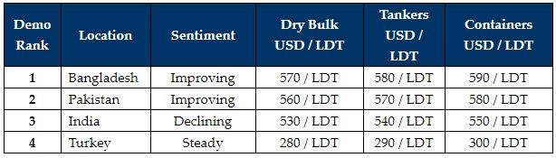

inWeekly Demolition Reports12/07/2021
Sub-continent markets continue to fire on during the summer / monsoon months, as firmer steel plate prices and an increasing lack of available tonnage has invariably pushedsub-continent offerings on to previously unthinkable levels.
Not since the boom year of 2008 have we seen levels quite so high, and as the mythical USD 600/LDT draws ever closer, we will certainly see some fresh sales records being set from over the past decade.
Notwithstanding, what comes up must eventually come down and many in the industry are now starting to fear that the markets may have peaked already and are now adjusting their levels in anticipation of some kind of an adjustment in the immediate future. To see levels DOUBLE over the course of just the last year alone, is quite an impressive and unexpected feat.
The supply of tonnage has been increasingly centered around offshore units and tankers of late viz. smaller bunkering tankers, MRs, Aframax tankers, and even FSUs, along with a variety of offshore vessels – including MOPUs and drill ships.
Due to the ongoing global Covid-19 restrictions, the expected summer slowdown has yet to really occur and most yards across the sub-continent recycling markets remain open and ready to accept vessels, as opposed to the slowdowns experienced during the seasonal retreat of yard laborers back to their hometowns over the summer / monsoon months.
Similarly, shipowners and shipbrokers continue to do business at these fantastic numbers whenever they can, especially as freight markets also remain strong across the dry bulk and container sectors.
Finally, global vaccine rates need to pick up, in order to combat the concerning spread of the Delta variant of the virus as well. And it will certainly be interesting to see how countries like the U.K., Israel, and the U.S.A. fare, now that restrictions are easing as vaccine rates hit the magic number in excess of 70% for herd immunity to take hold.
For week 28 of 2021, GMS demo rankings / pricing for the week are as below.

Download PDFSource: GMS